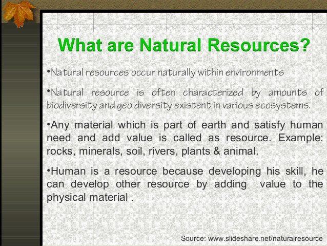

natural resources

Natural resources are resources that exist without the actions of humankind. This includes all valued characteristics such as magnetic,
gravitational, and electrical properties and forces. On earth it includes; sunlight, atmosphere, water, land, air (includes all minerals)
along with all vegetation and animal life that naturally subsists upon or within the heretofore identified characteristics and substances
Particular areas such as the rainforest in Fatu-Hiva are often characterized by the biodiversity and geodiversity existent in their ecosystems.
Natural resources may be further classified in different ways. Natural resources are materials and components (something that can be used) that
can be found within the environment. Every man-made product is composed of natural resources (at its fundamental level). A natural resource may
exist as a separate entity such as fresh water, and air, as well as a living organism such as a fish, or it may exist in an alternate form
must be processed to obtain the resource such as metal ores, petroleum, and most forms of energy.
There is much debate worldwide over natural resource allocations, this is particularly true during periods of increasing scarcity and shortages
(depletion and overconsumption of resources) but also because the exportation of natural resources is the basis for many economies (particularly
for developed countries).
Some natural resources such as sunlight and air can be found everywhere, and are known as ubiquitous resources. However, most resources only occur
in small sporadic areas, and are referred to as localized resources. There are very few resources that are considered inexhaustible (will not run out
in foreseeable future) – these are solar radiation, geothermal energy, and air (though access to clean air may not be). The vast majority of resources
are theoretically exhaustible, which means they have a finite quantity and can be depleted if managed improperly.